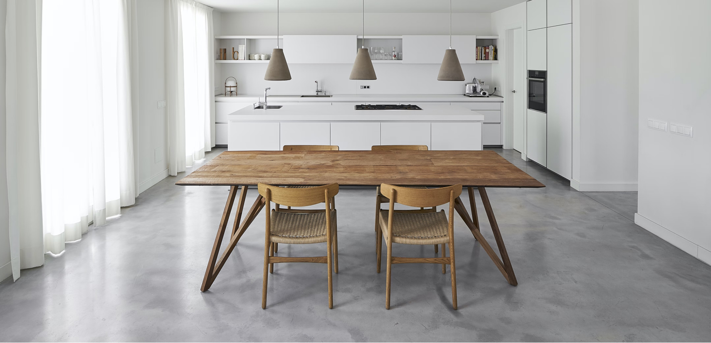

<main class="flex-fill">
  <section>
    <div class="container">
      <div class="row">
        <aside class="col-md-2 align-self-start mb-md-0 mb-40">
          <ul class="navbar-nav justify-content-center flex-md-column flex-row gap-20 mb-0">
            <li class="nav-item">
              <a class="nav-link" href="about.html">關於食堂</a>
            </li>
            <li class="nav-item">
              <a class="nav-link" href="about-chief.html">料理師</a>
            </li>
            <li class="nav-item">
              <a class="nav-link active" href="about-restaurant.html">餐廳介紹</a>
            </li>
          </ul>
        </aside>
        <div class="col-md-10 mb-md-0 mb-20">
          <h1 class="section__title fs-md-1 fs-2 pb-20 mb-0 text-md-start text-center">
            食堂私廚餐桌
            <hr class="my-10 mx-md-0 mx-auto opacity-100 border-0">
          </h1>
          <p>
            不想做只想吃也沒關係，我們開設家庭私廚服務，三五好友一起齊聚《食堂》聊天吃飯吧。食堂私廚餐桌提供各式各樣正餐、小吃、飲料、甜品等，每天都提供隱藏菜單，驚喜重現韓國才吃得到的小吃。
          </p>
          <p>
            《食堂》另一特色「韓國傳統石鍋飯」，強調生米原鍋烹煮成飯，石頭鍋以韓國特有「角閃石」打造而成，並精選來自花東地區優質品種白米，混合了高營養價值的紫米，利用石頭鍋高壓特性烹煮出一般電鍋無法煮出香甜Ｑ彈的米飯口感。
          </p>
          <p>
            希望每位來店的顧客都能置身高雅竹燈和竹林造景中，如皇族般享用道地韓式料理饗宴，二樓面街景的地方都是大面的玻璃窗，剛好外面的路樹高度都在二樓，所以看出去救是一片綠，好像在森林裡的玻璃屋用餐一樣。
          </p>
        </div>
        <div class="col-md-12 px-md-20 px-0 py-md-40 my-40">
          <div class="ratio ratio-16x9">
            
          </div>
        </div>
        <div class="col-md-5 offset-md-2 mb-md-0 mb-40">
          <h2 class="fs-md-2 fs-3 mb-10">聯絡資訊</h2>
          <ul class="list-unstyled d-flex flex-column gap-5 mb-md-40 mb-20 pb-10">
            <li>地址：115 台北市南港區富康街 1 巷 16 弄 9 號</li>
            <li>營業時間：11:00–14:30、17:00–21:30</li>
            <li>電話：0225548888</li>
          </ul>
          <h2 class="fs-md-2 fs-3 mb-10">交通方式</h2>
          <ul class="d-flex flex-column gap-5 mb-0">
            <li>捷運板南線、捷運文湖線南港展覽館七號出口</li>
            <li>國道一號前往內湖區安康路，從國道一號 15-東湖號出口下交流道，南湖大橋（國 1 南東湖）和三重路前往南港區的富康街 1 巷 16 弄 9 號</li>
            <li>國道三甲前往文山區的台北聯絡線，前往汐止區。從國道三號 14 號出口下交流道，繼續走橫科路。行駛到南港區的富康街 1 巷 16 弄 9 號</li>
          </ul>
        </div>
        <div class="col-md-5 col-10 offset-md-0 offset-1">
          <iframe src="https://www.google.com/maps/embed?pb=!1m18!1m12!1m3!1d1143.740985328315!2d121.61795886017731!3d25.05408468776417!2m3!1f0!2f0!3f0!3m2!1i1024!2i768!4f13.1!3m3!1m2!1s0x3442ab5790519561%3A0x4bebfaa6fae603e6!2zMTE15Y-w5YyX5biC5Y2X5riv5Y2A5a-M5bq36KGXMeW3tzE26Jmf!5e0!3m2!1szh-TW!2stw!4v1662307094069!5m2!1szh-TW!2stw" width="100%" height="100%" style="border:0;" allowfullscreen="" loading="lazy" referrerpolicy="no-referrer-when-downgrade"></iframe>
        </div>
      </div>
    </div>
  </section>
</main>
